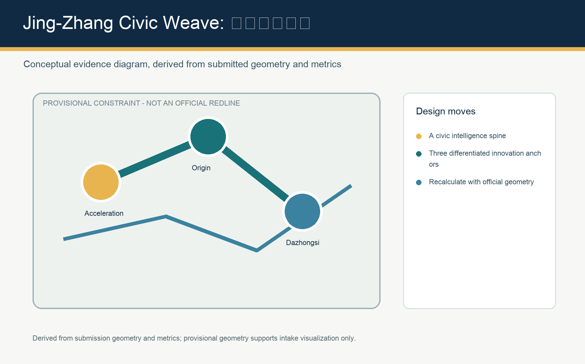
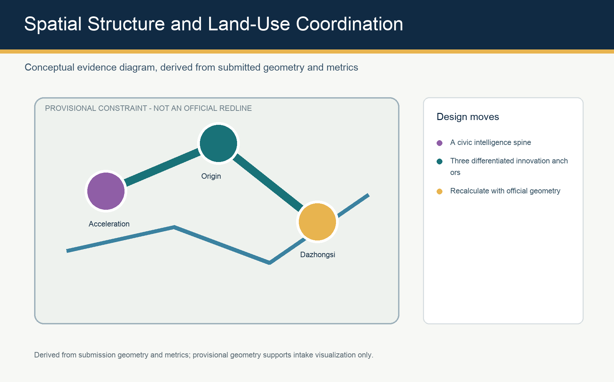
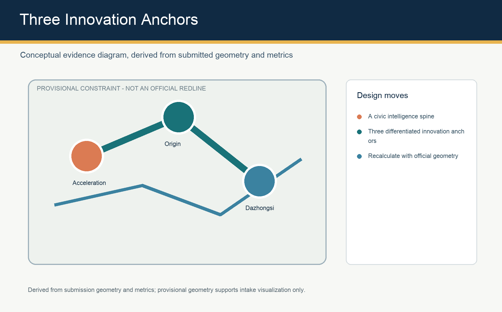
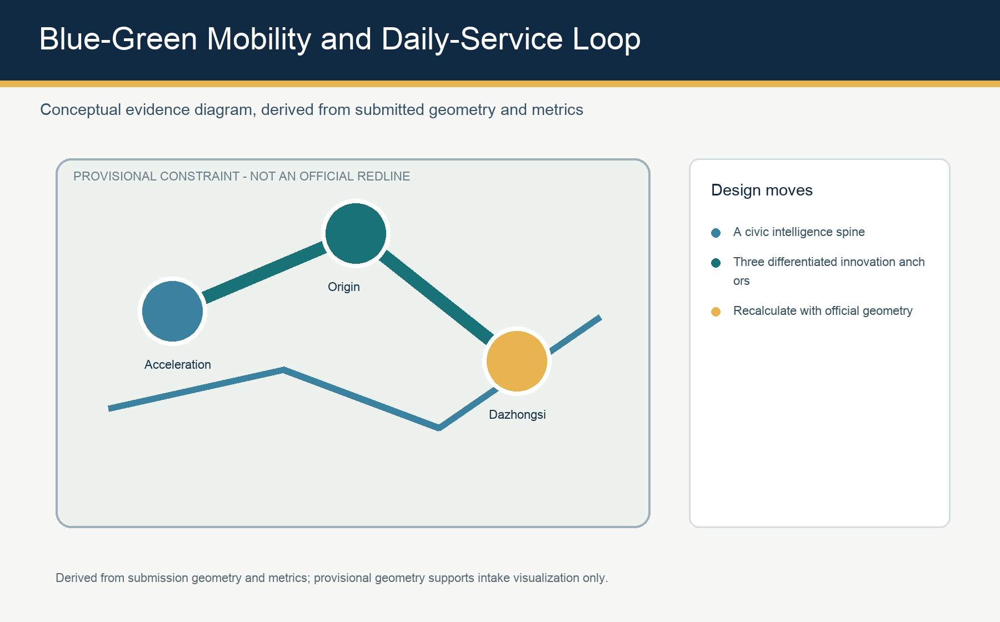
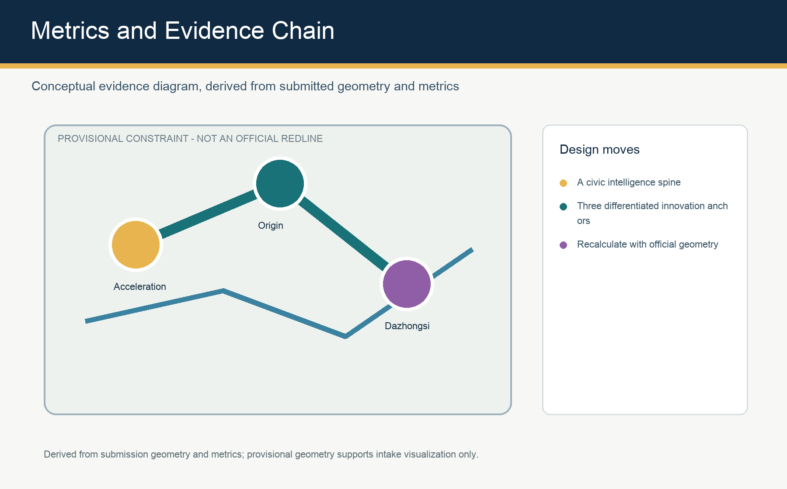

Jing-Zhang Civic Weave: A Conceptual AI Innovation Belt for Human-Agent Co-Creation
A bilingual conceptual urban-design proposal structured for auditable review and recalculation when official geometry becomes available.
Jing-Zhang Civic Weave
Design Basis and Source List
This concept uses the official public announcement, the cleared agent taskbook, and the repository source registry. The current site and key-area polygons are provisional constraints, useful for visualization and intake review only; they are not an official redline or a basis for precise statutory controls. 来源 来源

Three-Level Scope Framework
Jing-Zhang Civic Weave works across the 43.6 km2 coordinated research area, the 11.4 km2 overall design area, and three detailed-design areas. Strategy, spatial structure, and local projects are deliberately separated so each can be recalculated when official geometry arrives. 指标 空间数据

Coordinated Research Area: Industry and Future City Research
The proposal links university research, open-source collaboration, enterprise conversion, public experience, and international exchange through the Jing-Zhang intelligence spine. It is a conceptual operating framework, not an approved planning control. 深度

Overall Design Area: Urban Renewal and Regulatory-Plan-Level Urban Design
A heritage-led public-space spine, three innovation anchors, and a blue-green slow-mobility loop organize land use, renewal, daily services, and scenario nodes. Development intensity, height, ownership, and road controls remain pending official files. 标准 空间数据

Detailed Design of Key Areas
Zhongzhiyuan hosts full-stack testing and governance exchange; the AI Origin Community supports near-campus conversion and open-source life; Dazhongsi provides transit-oriented enterprise showcase and international exchange. All three are conceptual reference schemes for professional teams to deepen. 空间数据

AI Innovation Ecosystem, Personas, and AI+ Scenarios
Ten scenario cards connect developers, startup teams, enterprise visitors, residents, and students with places for publishing, testing, mobility, care, learning, and public service. Every public-facing AI scenario retains consent, minimization, human review, and non-digital access. 来源
Land Use, Building Scale, and Retain-Renovate-Demolish Strategy
The land-use partition is a complete conceptual spatial layer. Building footprints describe demonstration intensity only; floor-area ratio, height, density, retention decisions, and demolition decisions await statutory conditions and site surveys. 深度
Transport, Rail, Municipal Infrastructure, and Public Services
The slow-mobility loop ties rail access, park entrances, campuses, workplaces, and service nodes. Municipal, fire, parking, and utility strategies are coordination topics rather than confirmed engineering plans. 空间数据
Blue-Green Network, Public Space, and Urban Character
The proposal treats the heritage park as a daily civic room: shade, sport, conversation, applied-AI demonstration, and accessibility are joined through a resilient public-space network. 指标 指标
Renewal Projects, Implementation Policy, and Phasing
A reversible first phase tests community-facing services and public-space operations; later phases require official boundaries, regulatory controls, funding, ownership, and engineering review. 空间数据
Metrics, Area Recalculation, and Compliance Matrix
Geometry, metrics, and matrices are the auditable evidence layer. Known figures are recalculated from submitted geometries; unavailable statutory controls remain explicitly pending. 深度
Risk, Copyright, and Compliance
No claim in this entry represents approval, statutory planning, final ownership, confirmed construction, or implementation commitment. All graphics are original derived diagrams; the local visualization has no remote resources or tracking. 深度
References
See sources.json, assumptions.json, metrics.json, compliance_matrix.json, standard_matrix.json, and design_depth_matrix.json for the full traceable evidence layer.